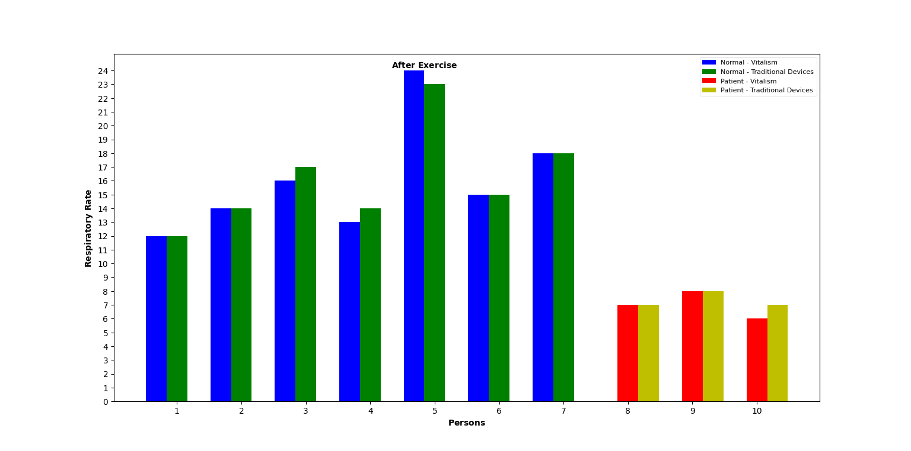
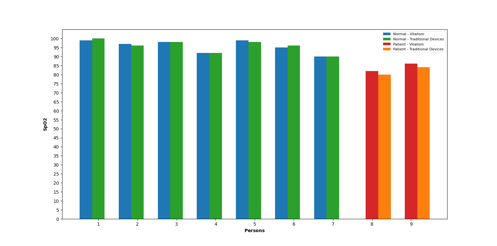
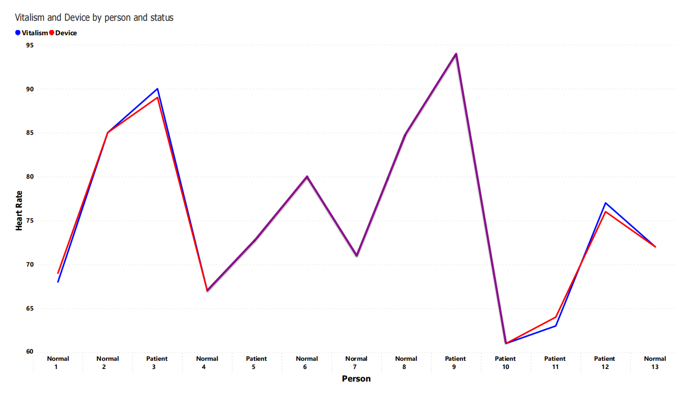

Our mission To check Vitalism’s accuracy
We visited Assiut University Liver Hospital and Assiut University Heart Hospital to measure the vital signs of both healthy people and patients. To compare the accuracy of the Vitalism application with traditional medical devices, we recorded the results obtained from both methods.
Click to see the resultsWhile visiting Assiut University Liver Hospital and Assiut University Heart Hospital
Comparison of Vitalism and traditional devices results for vital signs
Each chart compares the reading from the Vitalism application with the reading from a traditional medical device for the same person. Click a chart to enlarge it.



Frequently asked questions
What is Vitalism Check?
Vitalism Check is a ready-to-use application and management portal that businesses can use to measure their clients’ health parameters remotely — or to let clients measure them on their own. The application is compatible with desktops, mobile devices and web applications.
Which devices is Vitalism Check compatible with?
Vitalism Check runs on Android mobile devices and on Windows laptops and desktops. It is also available as a web application for the Google Chrome and Safari mobile browsers.
Does Vitalism Check require an internet connection to measure health parameters?
Yes. An internet connection is needed to complete measurements with Vitalism Check.
Does Vitalism Check save images or videos of users?
No. Vitalism Check does not save images or videos of its users.
Does Vitalism have access to the data measured with Vitalism Check?
No. Vitalism has no access to the measured data. It is accessible only to your account admins and your clients, so that both of you can review measurement history and trends.
Does Vitalism’s health monitoring require contact with the skin?
Vitalism offers two measurement methods:
- Contactless, video-based (rPPG) — the user simply looks at the device’s camera.
- Contact-based (PPG) — the user places a finger on the smartphone’s rear camera. This method is intended for challenging conditions, such as complete darkness or excessive movement.

Ready to try our Health Data Platform?
Have a specific use case in mind for Vitalism technology? Let’s set up a call and talk it through.